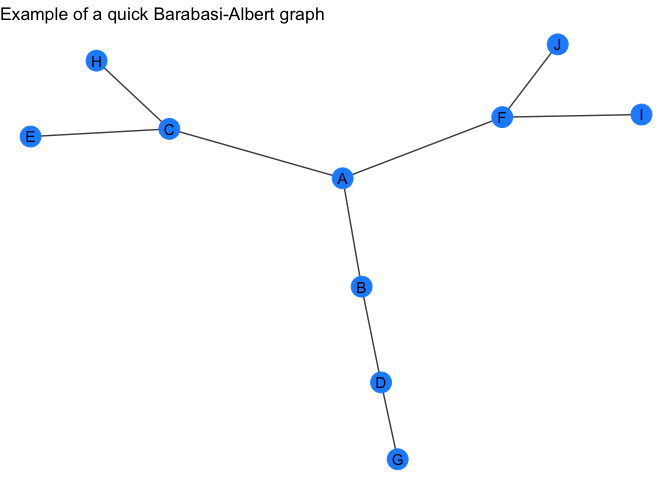
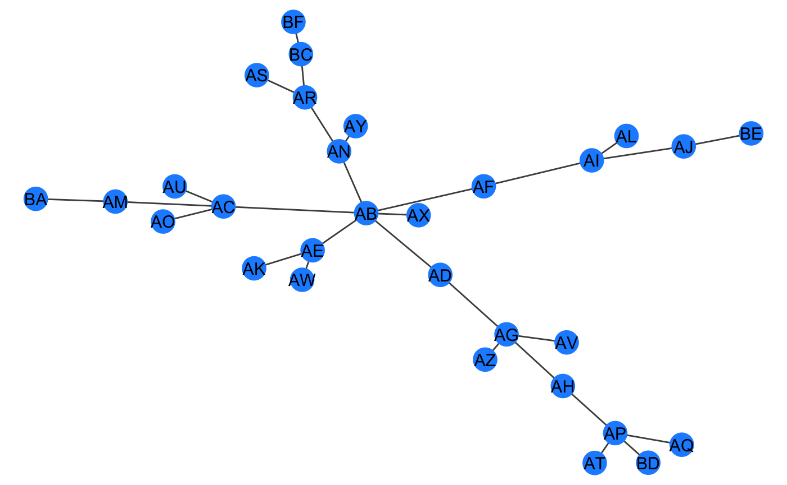
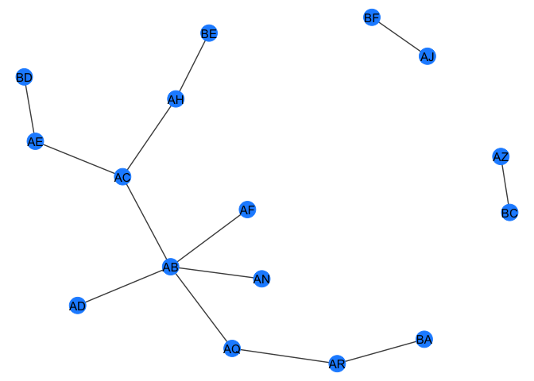

These are a bunch of functions that I find myself declaring and rewriting in a many scripts and analyses.
Full documentation at the ‘pkgdown site’.
General Utilities
n_unique - return the number of unique values in a vector.
unique_na - return the unique values in a vector, omitting NA.
a <- c(1, 2, 3, NA, 3)
unique_na(a)
#> [1] 1 2 3
b <- list(c(1, 2, 3, NA), c(1, 2, NA, 5))
unique_na(b)
#> [[1]]
#> [1] 1 2 3 NA
#>
#> [[2]]
#> [1] 1 2 NA 5
unique_na(b, to_unlist = TRUE)
#> [1] 1 2 3 5minmax - set limits on a vector of numeric values.
c <- sample(-100:100, 20)
c
#> [1] 41 -33 66 28 61 -58 -87 86 -50 -16 -80 5 81 -27 -94 -28 -22
#> [18] -64 4 9
minmax(c, -10, 10)
#> [1] 10 -10 10 10 10 -10 -10 10 -10 -10 -10 5 10 -10 -10 -10 -10
#> [18] -10 4 9u_pull - works just like dplyr::pull() except only returns unique values. There are also options to return the values sorted and without NA using the paramters sorted and na.rm, respectively.
vsample - a safe wrapper for base::sample() that always assumes you are passing a vector.
# samples from 1:10
sample(10)
#> [1] 5 10 2 8 6 1 4 3 9 7
# just returns 10
vsample(10)
#> [1] 10
# samples from 1:5 with replacement
sample(5, 10, replace = TRUE)
#> [1] 3 2 2 4 4 4 2 4 1 1
# samples from `c(5)` with replacement
vsample(5, 10, replace = TRUE)
#> [1] 5 5 5 5 5 5 5 5 5 5str_replace_us and str_replace_sp - replace underscores with spaces, or vice vera.
Tidygraph
quick_forestfire and quick_barabasi- wrapper around tidygraph::play_forestfire and tidygraph::play_barabasi_albert except that it will return a tidygraph object with the node attribute "name".
forest_gr <- quick_forestfire(10)
forest_gr
#> # A tbl_graph: 10 nodes and 31 edges
#> #
#> # An undirected simple graph with 1 component
#> #
#> # Node Data: 10 x 1 (active)
#> name
#> <chr>
#> 1 A
#> 2 B
#> 3 C
#> 4 D
#> 5 E
#> 6 F
#> # … with 4 more rows
#> #
#> # Edge Data: 31 x 2
#> from to
#> <int> <int>
#> 1 1 2
#> 2 2 3
#> 3 1 3
#> # … with 28 more rows
my_plot_fxn(forest_gr) +
labs(title = "Example of a quick Forest Fire graph model")
barabasi_gr <- quick_barabasi(10)
barabasi_gr
#> # A tbl_graph: 10 nodes and 9 edges
#> #
#> # An undirected simple graph with 1 component
#> #
#> # Node Data: 10 x 1 (active)
#> name
#> <chr>
#> 1 A
#> 2 B
#> 3 C
#> 4 D
#> 5 E
#> 6 F
#> # … with 4 more rows
#> #
#> # Edge Data: 9 x 2
#> from to
#> <int> <int>
#> 1 1 2
#> 2 1 3
#> 3 2 4
#> # … with 6 more rows
my_plot_fxn(barabasi_gr) +
labs(title = "Example of a quick Barabasi-Albert graph")
quick_graph - randomly selects one of the above random graphs.
recursive_graph_join - recursively join a list of tidygraph objects.
gr_list <- purrr::map(c(5, 10, 15), quick_forestfire)
gr <- recursive_graph_join(gr_list)
gr
#> # A tbl_graph: 15 nodes and 93 edges
#> #
#> # A directed acyclic multigraph with 1 component
#> #
#> # Node Data: 15 x 1 (active)
#> name
#> <chr>
#> 1 A
#> 2 B
#> 3 C
#> 4 D
#> 5 E
#> 6 F
#> # … with 9 more rows
#> #
#> # Edge Data: 93 x 2
#> from to
#> <int> <int>
#> 1 1 2
#> 2 1 3
#> 3 2 3
#> # … with 90 more rows
my_plot_fxn(gr) +
labs(title = "Example of joining 3 forest fire graphs")
filter_component_size - filter the components of a tidygraph object by their individual number of nodes (order).
gr <- tidygraph::bind_graphs(quick_forestfire(4, name = LETTERS),
quick_forestfire(6, name = letters))
igraph::count_components(gr)
#> [1] 2
igraph::count_components(filter_component_size(gr, min_size = 5))
#> Warning: `as_quosure()` requires an explicit environment as of rlang 0.3.0.
#> Please supply `env`.
#> This warning is displayed once per session.
#> [1] 1
igraph::count_components(filter_component_size(gr, max_size = 5))
#> [1] 1get/rm_giant_component - either return only or everything except the giant component of a graph (i.e. the component with the most number of nodes).
gr_large <- quick_forestfire(10, name = LETTERS)
gr_small <- quick_forestfire(5, name = letters)
gr <- tidygraph::bind_graphs(gr_large, gr_small)
gr
#> # A tbl_graph: 15 nodes and 28 edges
#> #
#> # A directed acyclic simple graph with 2 components
#> #
#> # Node Data: 15 x 1 (active)
#> name
#> <chr>
#> 1 A
#> 2 B
#> 3 C
#> 4 D
#> 5 E
#> 6 F
#> # … with 9 more rows
#> #
#> # Edge Data: 28 x 2
#> from to
#> <int> <int>
#> 1 1 2
#> 2 2 3
#> 3 1 3
#> # … with 25 more rows
get_giant_component(gr)
#> # A tbl_graph: 10 nodes and 19 edges
#> #
#> # A directed acyclic simple graph with 1 component
#> #
#> # Node Data: 10 x 1 (active)
#> name
#> <chr>
#> 1 A
#> 2 B
#> 3 C
#> 4 D
#> 5 E
#> 6 F
#> # … with 4 more rows
#> #
#> # Edge Data: 19 x 2
#> from to
#> <int> <int>
#> 1 1 2
#> 2 2 3
#> 3 1 3
#> # … with 16 more rows
rm_giant_component(gr)
#> # A tbl_graph: 5 nodes and 9 edges
#> #
#> # A directed acyclic simple graph with 1 component
#> #
#> # Node Data: 5 x 1 (active)
#> name
#> <chr>
#> 1 a
#> 2 b
#> 3 c
#> 4 d
#> 5 e
#> #
#> # Edge Data: 9 x 2
#> from to
#> <int> <int>
#> 1 1 2
#> 2 1 3
#> 3 2 3
#> # … with 6 more rowsnum_qual_neighbors - to be used with tidygraph::map_local_int() to count the number of neighbors that satisfy a logical expression that is applied to the node attributes of the neighborhood.
gr <- quick_barabasi(30)
gr
#> # A tbl_graph: 30 nodes and 29 edges
#> #
#> # An undirected simple graph with 1 component
#> #
#> # Node Data: 30 x 1 (active)
#> name
#> <chr>
#> 1 AB
#> 2 AC
#> 3 AD
#> 4 AE
#> 5 AF
#> 6 AG
#> # … with 24 more rows
#> #
#> # Edge Data: 29 x 2
#> from to
#> <int> <int>
#> 1 1 2
#> 2 1 3
#> 3 2 4
#> # … with 26 more rows
my_plot_fxn(gr)
# number of neighbors with a "B" in their name
B_gr <- gr %>%
mutate(name_with_B = map_local_int(
.f = num_qual_neighbors,
lgl_filter = rlang::expr(stringr::str_detect(name, "B"))
))
B_gr %N>%
filter(name_with_B > 0) %>%
my_plot_fxn()
get_node_index - returns the indices of the nodes that pass the expression evaluted in ’dplyr::filter()`.
# simple equalities
get_node_index(quick_barabasi(10), name == "B")
#> [1] 2
get_node_index(quick_barabasi(10), name %in% c("B", "C", "D"))
#> [1] 2 3 4
# can also evaluate functions
get_node_index(quick_barabasi(10), stringr::str_detect(name, "A|B|C"))
#> [1] 1 2 3Pacakge Utilities
document_df - prints the framework for documenting a data frame object.
dat <- tibble::tibble(x = c(LETTERS[1:5]),
y = c(1:5),
z = list(rep(list(1:3), 5)))
dat
#> # A tibble: 5 x 3
#> x y z
#> <chr> <int> <list>
#> 1 A 1 <list [5]>
#> 2 B 2 <list [5]>
#> 3 C 3 <list [5]>
#> 4 D 4 <list [5]>
#> 5 E 5 <list [5]>
document_df(dat)
#> #' @format a tibble (5 x 3)
#> #' \describe{
#> #' \item{x}{}
#> #' \item{y}{}
#> #' \item{z}{}
#> #' }